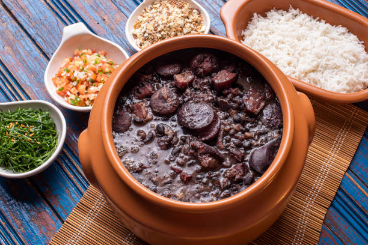

Feijoada à Vila do Conde
Ingredients
- 1 pound black beans, soaked overnight
- 1 pound pork shoulder, cut into chunks
- 1/2 pound chorizo sausage, sliced
- 1/2 pound smoked sausage, sliced
- 1/2 pound bacon, chopped
- 1 large onion, finely chopped
- 4 cloves garlic, minced
- 2 bay leaves
- 1/2 teaspoon cayenne pepper (adjust to taste)
- Salt and black pepper to taste
- Olive oil for cooking

Preparation
- Prepare the Beans:
Rinse and drain the soaked black beans. Place them in a large pot, cover with water, and bring to a boil. Reduce heat, cover, and simmer until beans are tender (about 1-2 hours).
- Cook the Meats:
In a separate large pot, heat olive oil over medium heat. Add bacon and cook until browned. Add pork shoulder chunks and brown on all sides.
Add sliced chorizo and smoked sausage to the pot, cooking until they release their flavors.
- Add Aromatics:
Stir in chopped onion and minced garlic. Cook until the onion is softened.
- Combine Ingredients:
Once the meats and aromatics are cooked, add the cooked black beans (with some of their cooking liquid) to the pot.
- Season the Feijoada:
Season the stew with bay leaves, paprika, cayenne pepper, salt, and black pepper. Adjust the seasoning to your taste.
- Simmer:
Allow the Feijoada to simmer on low heat for at least 30 minutes to let the flavors meld together. You can simmer it longer for a richer taste.
- Serve:
Serve the Feijoada hot, typically accompanied by rice, orange slices, and a side of sautéed greens.